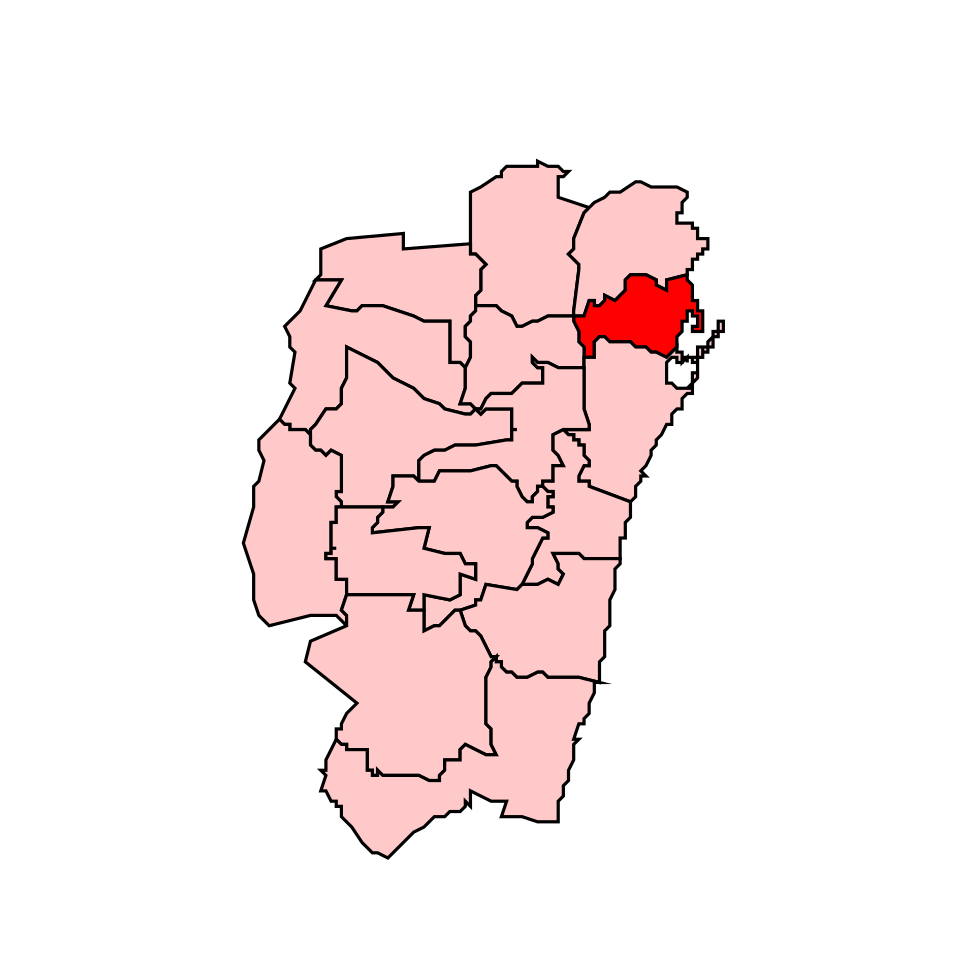
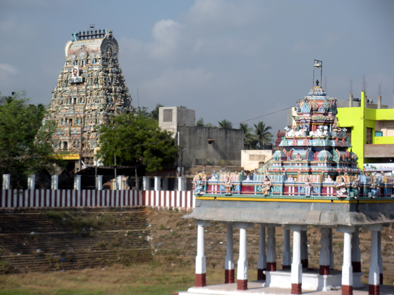
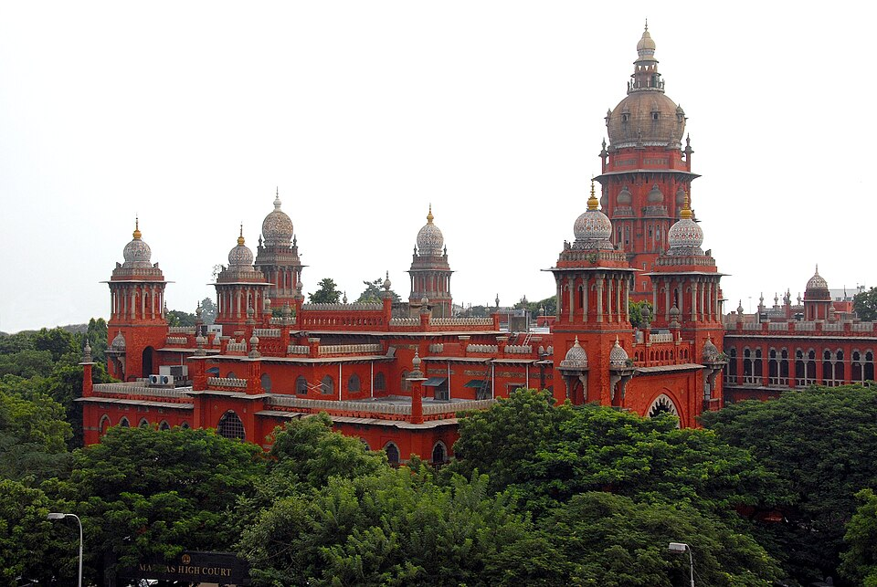
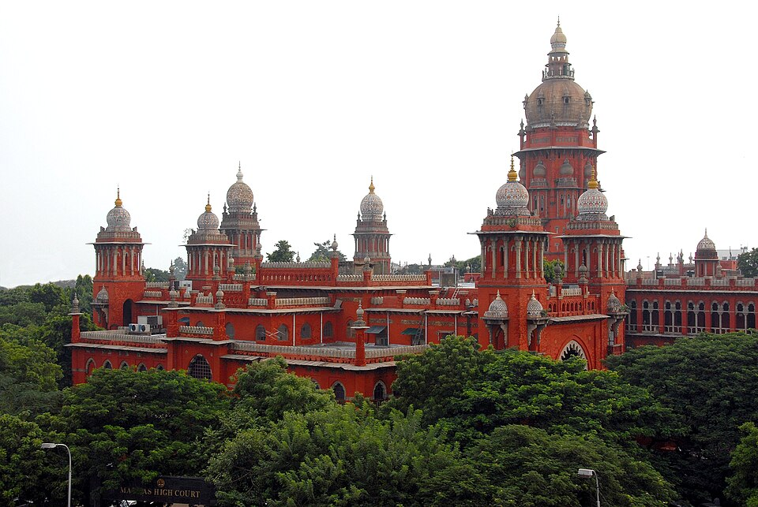
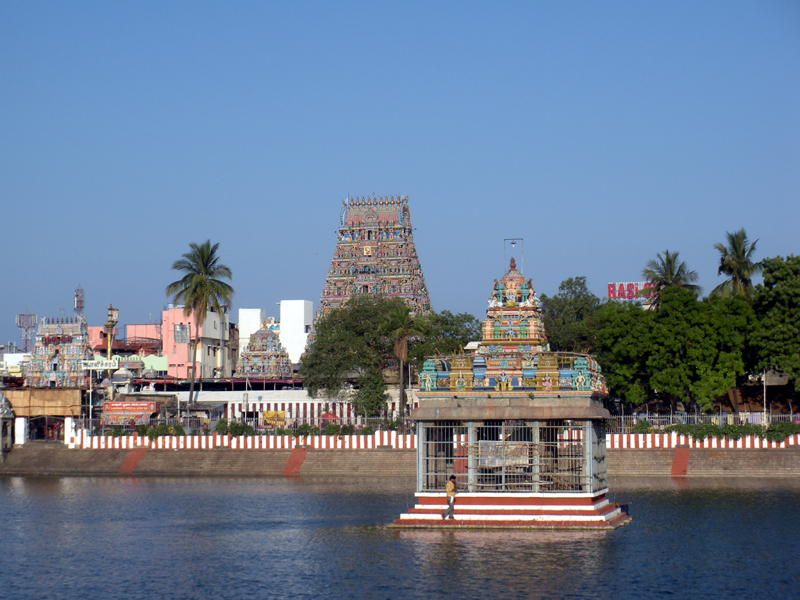
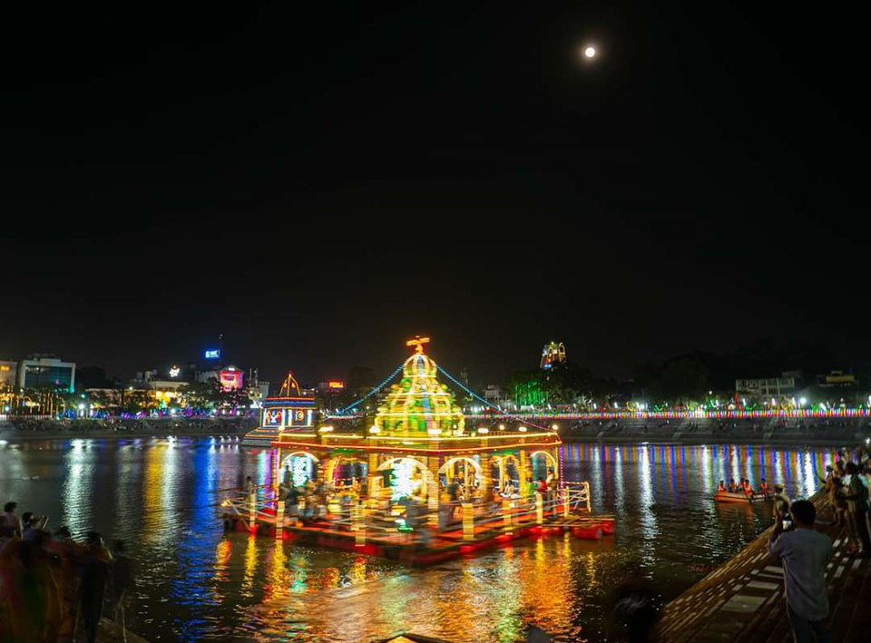
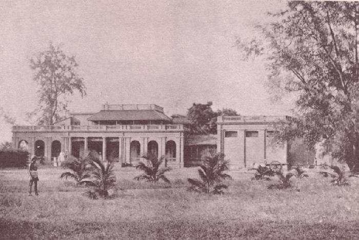
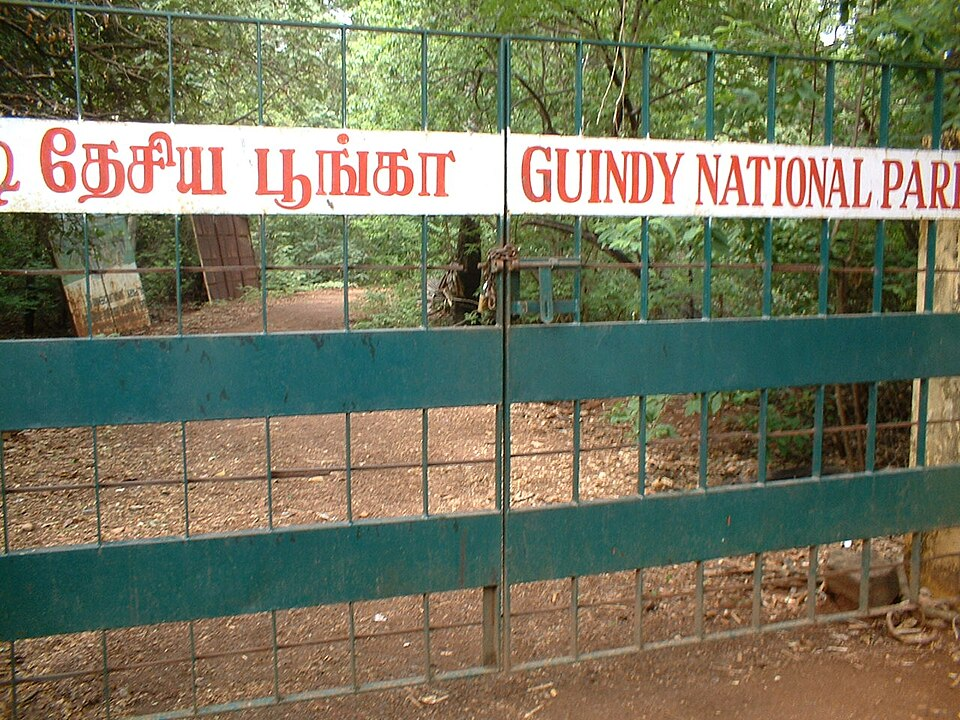

North Chennai
The industrial heartbeat, fishing harbours, and forgotten colonial beginnings.

Royapuram Fishing Harbour
A chaotic, vibrant harbour at dawn where the city's freshest catch is hauled in and auctioned amidst the thundering waves.
📍 View on MapTondiarpet Godowns
Faded colonial-era warehouses lining the old port roads, echoing with a century of maritime trade history.
📍 View on Map
Thyagaraja Temple
An ancient Tiruvottiyur shrine older than Chennai itself, with deep ties to Carnatic music history and intricate stone carvings.
📍 View on Map
Pulicat Lake
A calm coastal stretch just north of the city, famous for its Dutch cemetery ruins and winter flamingo migrations.
📍 View on Map
Kasimedu Pier
A scenic breakwater offering gritty, unfiltered views of the sea, popular among locals for evening strolls and sunset watching.
📍 View on MapGeorgetown
The original heart of Madras.

Armenian Street
Home to the 300-year-old Armenian Church, offering a quiet, bell-towered refuge amidst the bustling wholesale markets.
📍 View on Map
Linghi Chetty Street
A narrow lane packed with historic merchants, antique dealers, and small eateries serving authentic local staples.
📍 View on MapBurma Bazaar
A massive, narrow grey-market street along the port wall founded by repatriates, famous for its imported curios.
📍 View on Map
High Court Corridors
An Indo-Saracenic architectural marvel with stunning stained glass, painted ceilings, and domed towers wrapped in legal history.
📍 View on Map
Parry's Corner
The historic intersection where fading colonial trading houses meet the energetic chaos of dense local transport.
📍 View on MapMylapore Belt
Temple tanks, traditional arts, and colonial intersections.

Kapaleeshwarar Tank
A massive, stepped temple tank surrounded by ancient agraharams, especially magical during the floating and dusk festivals.
📍 View on Map
Triplicane Pettai
Ancient residential streets behind the Parthasarathy Temple where heritage tile-roofed houses meet traditional literature.
📍 View on MapSan Thome Backstreets
Quiet, Portuguese-influenced alleys leading to the historic basilica built over the tomb of St. Thomas the Apostle.
📍 View on Map
Luz Corner
The traditional shopping hub of Mylapore with decades-old silk merchants, hidden bookstores, and filter coffee aromas.
📍 View on Map
Vivekananda House
A distinctive semi-circular "ice house" built to store imported Boston ice, which now hosts exhibits on the philosopher's life.
📍 View on MapSouth Chennai
Canopies, crumbling bridges, and coastal breezes.

Theosophical Society
A vast, lush 260-acre campus hiding a 400-year-old banyan tree, quiet philosophical libraries, and ancient ruins.
📍 View on Map
Broken Bridge
A crumbling colonial-era bridge on the Adyar river, reclaimed by nature and popular with local fishermen at dawn.
📍 View on Map
Adyar Estuary
A vibrant, ecologically crucial intersection where the river meets the sea, rich in migratory birdlife and mangroves.
📍 View on Map
Elliot's Back Lanes
Quiet streets lined with old sea-facing bungalows, bougainvillea walls, and modern cafes tucked away from the main beach promenade.
📍 View on MapKalakshetra Colony
A serene, tree-lined neighborhood famous for its classical dance academy and dedication to traditional aesthetics.
📍 View on MapArt & Craft
Villages of creativity along the coast.
Cholamandal Village
India's largest self-supporting artists' commune, featuring open-air sculptures, studios, and contemporary galleries.
📍 View on MapDakshinaChitra
A breathtaking living museum recreating traditional heritage houses and folk arts collected from across South India.
📍 View on MapKalpa Druma
A sprawling, rustic boutique space celebrating indigenous textiles, pottery, and vibrant sustainable crafts.
📍 View on MapSilambam Akharas
Local, unassuming sand-pit training grounds where dedicated practitioners master the ancient martial art of stick fighting.
📍 View on MapRukmini Devi Museum
An intimate collection of stunning textiles, jewelry, and artifacts preserving the legacy of the visionary Kalakshetra founder.
📍 View on MapNature & Estuaries
Wetlands, sanctuaries, and urban escapes.

Vedanthangal
One of India's oldest water bird sanctuaries, hosting thousands of exotic migratory arrivals every winter.
📍 View on Map
Pallikaranai Marsh
A vital urban wetland situated right next to modern tech parks, sustaining rare avian species and aquatic flora.
📍 View on Map
Muttukadu Backwaters
Serene, wind-swept backwaters ideal for a quiet afternoon of rowing and escaping the noise of the main city.
📍 View on Map
Guindy National Park
A rare, dense national park located entirely within city limits, home to free-roaming blackbucks and spotted deer.
📍 View on MapChetpet Ecopark
A restored, tranquil lake offering a surprisingly calm spot for angling and walking amidst the urban heat island.
📍 View on Map